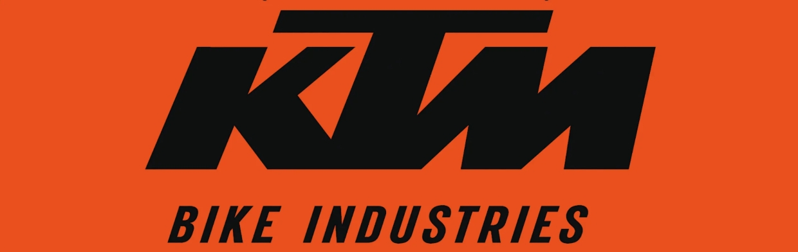
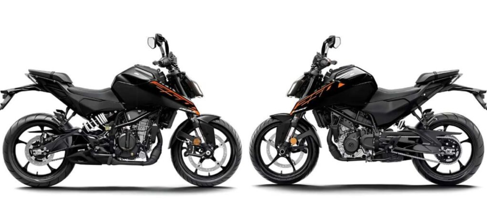
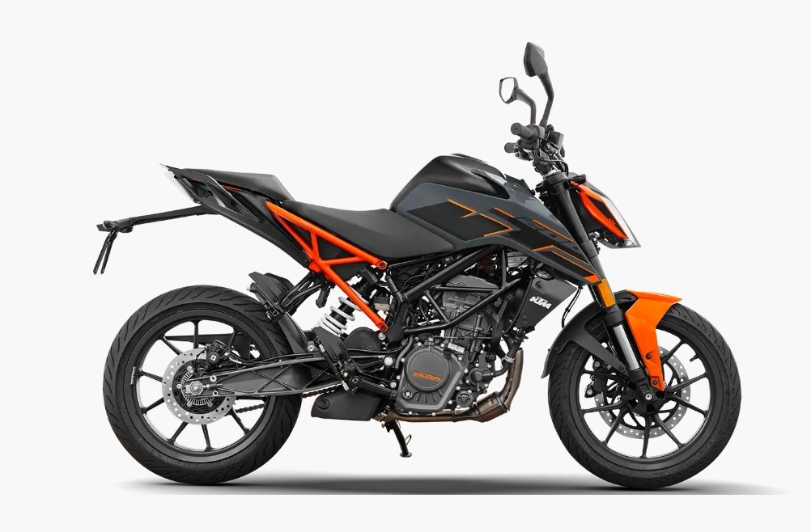
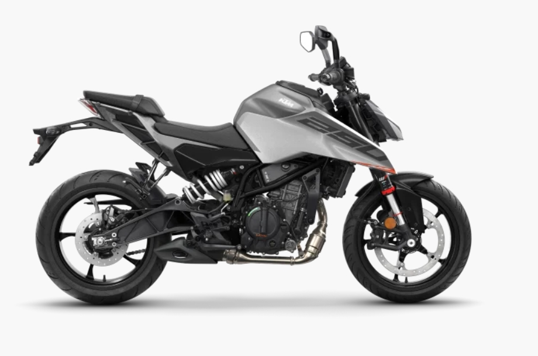
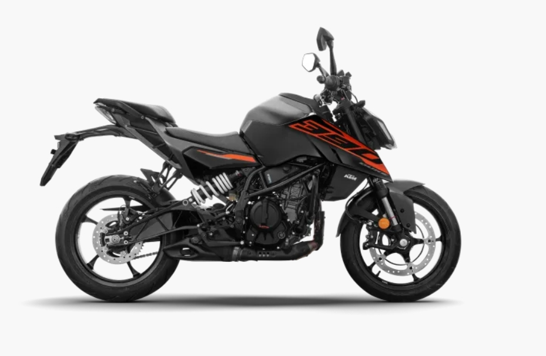
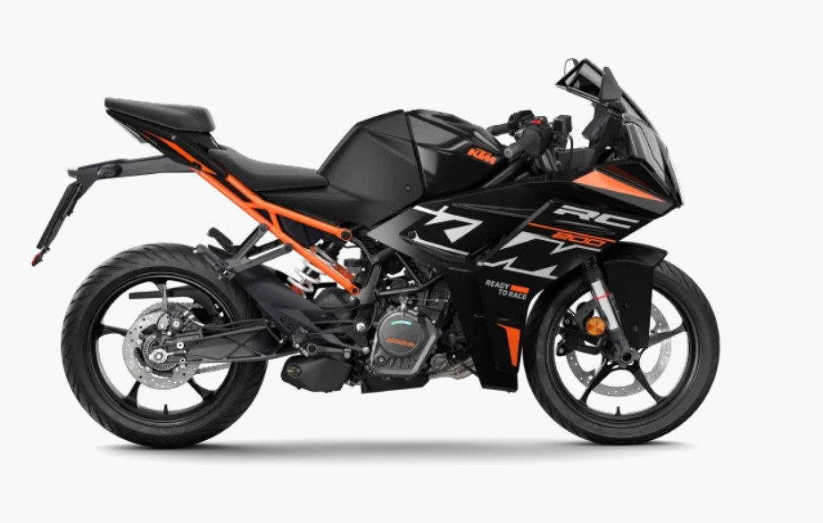
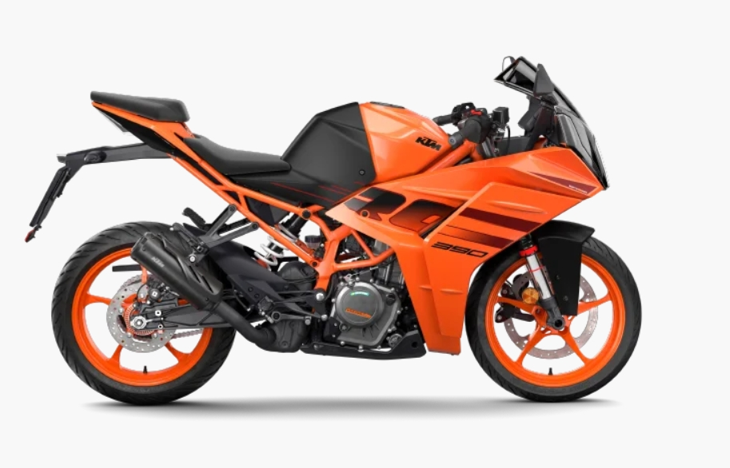
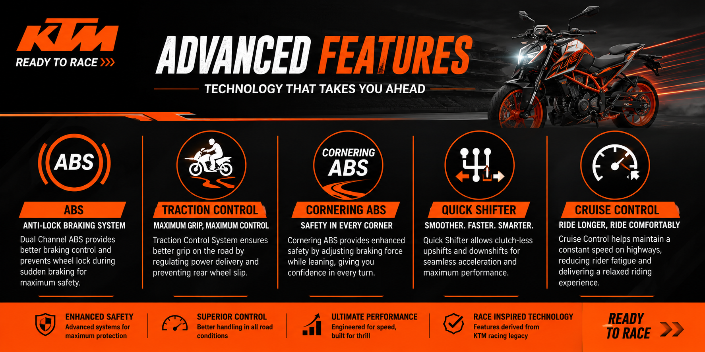
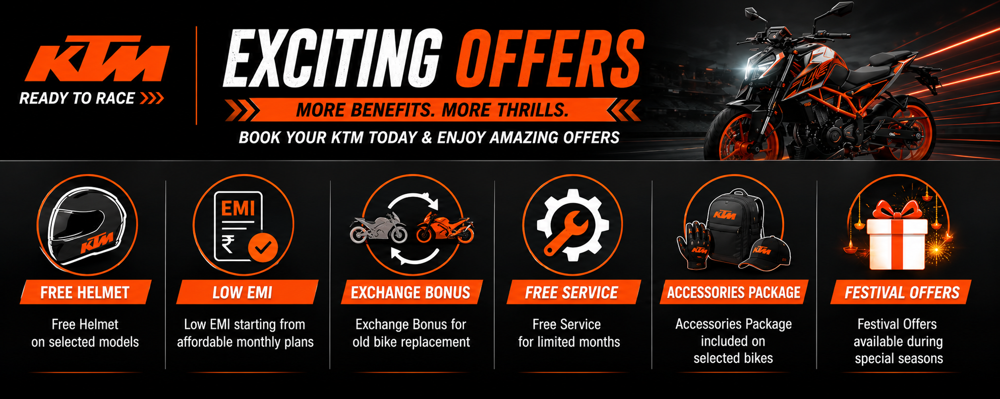

About KTM

KTM is one of the world’s most popular sports bike manufacturers known for producing high performance motorcycles with aggressive styling and advanced technology. The company originally started in Austria and later became one of the leading motorcycle brands in many countries including India.
KTM motorcycles are specially designed for riders who love speed, racing and adventure riding. The brand is famous for its lightweight body structure, powerful engines and sporty performance. KTM bikes provide excellent acceleration, strong braking systems and smooth handling experience for both city roads and highways.
In India, KTM became highly successful through its partnership with Bajaj Auto. The company introduced many popular models including the Duke and RC series. Duke bikes are mainly designed for street performance and daily riding while RC bikes are focused on track inspired racing performance.
KTM motorcycles come with many modern features such as TFT digital displays, LED lighting systems, dual channel ABS, traction control and quick shifter technology. These features improve rider safety, comfort and overall performance.
KTM Models

- KTM Duke 200
- KTM Duke 250
- KTM Duke 390
- KTM RC 200
- KTM RC 390
KTM Duke 200

KTM Duke 200 is one of the best entry level sports bikes
for young riders. It is lightweight, powerful and easy to handle.
The sharp body design and sporty performance make
the Duke 200 highly popular among bike lovers.
- Engine : 199cc
- Power : 25 PS
- Torque : 19.3 Nm
- Top Speed : 140 km/h
- Mileage : 35 km/l
KTM Duke 250

KTM Duke 250 is a perfect middle weight street bike
for riders who want more power than the Duke 200 while still
maintaining smooth handling and comfort.
The bike comes with a muscular fuel tank,
sharp LED headlamps and aggressive body styling.
It delivers strong performance for both city rides and highway trips.
Duke 250 is highly popular among young riders because of its
balance between performance, comfort and
modern technology.
- Engine : 249cc
- Power : 31 PS
- Torque : 25 Nm
- Top Speed : 150 km/h
- Mileage : Around 30 km/l
- ABS : Dual Channel ABS
KTM Duke 390

KTM Duke 390 is one of the most powerful naked street bikes
available in India with aggressive acceleration and premium features.
The bike comes with TFT display,
traction control and advanced electronics.
- Engine : 390cc
- Power : 46 PS
- Torque : 39 Nm
- Top Speed : 170 km/h
- Feature : TFT Display
KTM RC 200

KTM RC 200 is a fully faired sports motorcycle
inspired by racing bikes and aerodynamic performance.
The sporty riding posture and race inspired design
make it one of the best beginner track bikes.
- Engine : 199cc
- Power : 25 PS
- Torque : 19.2 Nm
- Top Speed : 145 km/h
- ABS : Dual Channel ABS
KTM RC 390

KTM RC 390 is one of the fastest and most advanced
sports bikes in the KTM lineup designed for track performance.
The bike features quick shifter,
cornering ABS and aerodynamic fairing.
- Engine : 390cc
- Power : 43.5 PS
- Torque : 37 Nm
- Top Speed : 180 km/h
- Feature : Quick Shifter
Features

- High Speed Performance
- Stylish Design
- Best Racing Experience
- Powerful Engine
- Advanced Technology
- Premium Build Quality
KTM motorcycles are built for riders who love speed,
adventure and sporty performance. The company combines
modern technology with aggressive styling to create
powerful bikes for both city and highway riding.
KTM bikes are famous for their lightweight chassis,
quick acceleration and excellent handling ability.
Riders experience better control, comfort and stability
even at high speeds.
Most KTM motorcycles come with advanced features like
TFT digital display, dual channel ABS,
traction control and powerful LED lighting systems.
KTM also provides premium sporty design with sharp body panels,
aerodynamic styling and race inspired graphics which attract
young bike enthusiasts.
Latest Offers

Book your KTM bike today and get exciting offers,
free accessories and service benefits on selected models.
Customers can get cash discounts,
exchange bonuses and attractive
EMI finance options with low down payment plans.
KTM is also providing free riding accessories
including helmets, gloves and bike protection kits
for limited period bookings.
Special benefits are available for college students,
first time buyers and riders upgrading from smaller motorcycles.
- Free Helmet on selected models
- Low EMI starting from affordable monthly plans
- Exchange Bonus for old bike replacement
- Free Service for limited months
- Accessories Package included on selected bikes
- Festival Offers available during special seasons
Visit your nearest KTM showroom today and experience the thrill of riding.